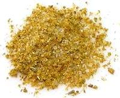

 |
East African Curry PowderEast Africa (Kenya, Uganda, Tanzania) - Simba Mbili (Swahili) | ||||
| Makes: Effort: Sched: DoAhead: |
3-3/4 oz ** 15 min Yes |
This is simply our excellent Kenyan Mchuzi Mix (Stew Mix) without the Beef Bouillon Powder - so it's 100% Vegetarian instead of 99.7% Vegetarian. This recipe doesn't quite fill a 4 oz spice jar. | |||
|
----- 1 1 1 1 ----- 1 1 1 1 1 |
--- T T T T --- T T T T T |
-- Grind Coriander Seeds Cumin Seeds Fennel Seeds Cinnamon -- Powdered Turmeric Garlic Powder Ginger Powder Sugar Salt |
Make: - (15 min)
|